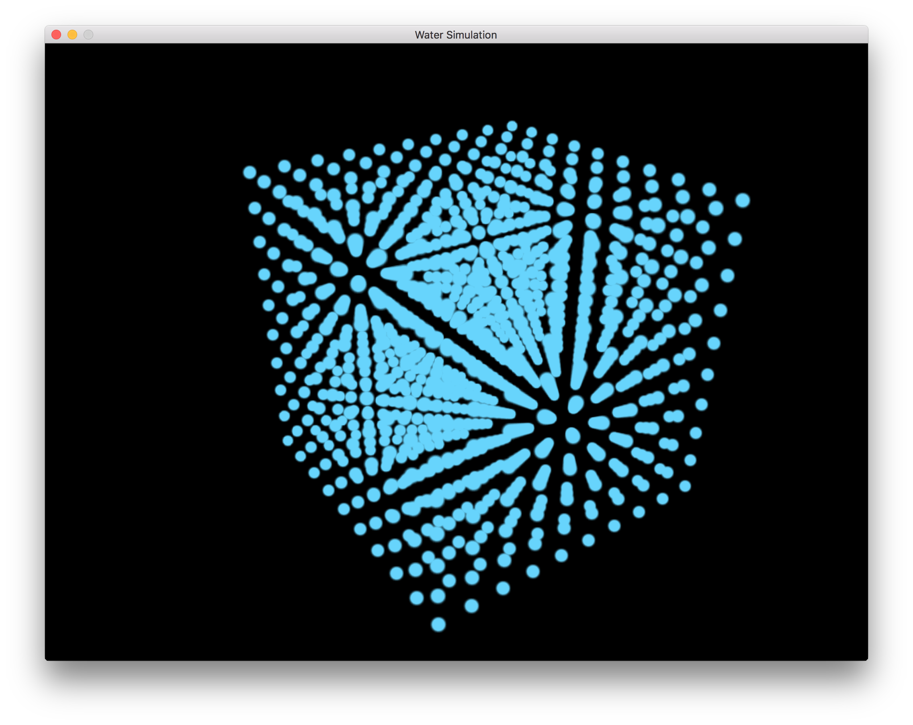
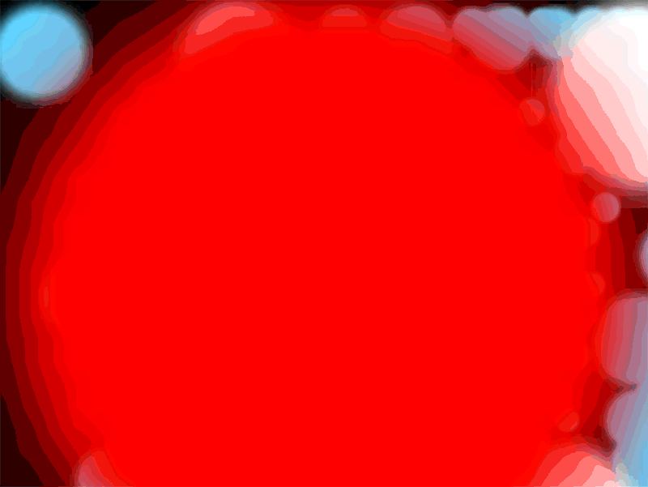
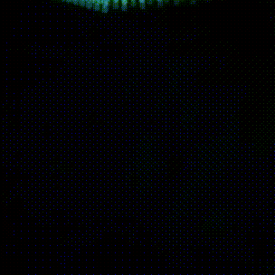

The first thing that was necessary to finish was to implement a basic Particle class to store the attributes of our particles. Then we needed to build a basic renderer to view our particles. This took longer than we expected but we finally got it finished. We then added the ability to move the camera around using the mouse and keyboard.
|

|
We could now finally start the fun part of implementing the water simulation. The first necessary part of the physics was to have an efficient way of calculating the neighbors of each particle. This was similar to how we did in class, hashing the position after breaking the space in to buckets. There was one major difference though in that we now needed to consider not only the particles in one bucket, but also the 27 surrounding buckets.
|

|
In the image above, we are visualizing the red particle's neighbors. All the particles colored white are neighbors. As we zoom out, you can see that we get the correct results with only those particles within our defined threshold being considered neighbors. This image is also a good demonstration of our controls working.
After this we began implementing the math of the water simulation. However, as we see in the next section, we are still stuck on it...
After finishing the above we dove into implementing the math that makes the simulation work. However, as previously mentioned, it did not go as smoothly as we hoped and we are currently still stuck on incompressibility. We have derived all of our gradients and implemented all the necessary functions, however, we are not getting the desired results. We are unsure if there is a problem with our math or our implementation. We have checked the math and feel fine so we believe it is an implementation bug. We find that we are running in to some numerical instabilities as our simulation progresses forward when calculating the lambda values. The paper mentions this and mentions a "relaxation parameter" used to fix this, however, they do not give the value of the parameter they use and we find that any values we try do not help.
Below is an animation of our current, obviously incorrect, implementation
|

|
As expected, we are behind on our previous plan. We believe we are close to finishing the incompressibility of the water which is the bulk of it, then we need only add vorticity and viscocity which seems much simpler. After this, we will be back on track and can begin attempting to add the extra things such as surface reconstruction and user interaction mentioned in our plan.
Finish external forces implementations and apply heat property to particles to reflect the effect of temperature on the movement of particles.
Implement wind effect by dragging with mouse. If time allows, try to get surface reconstruction working.